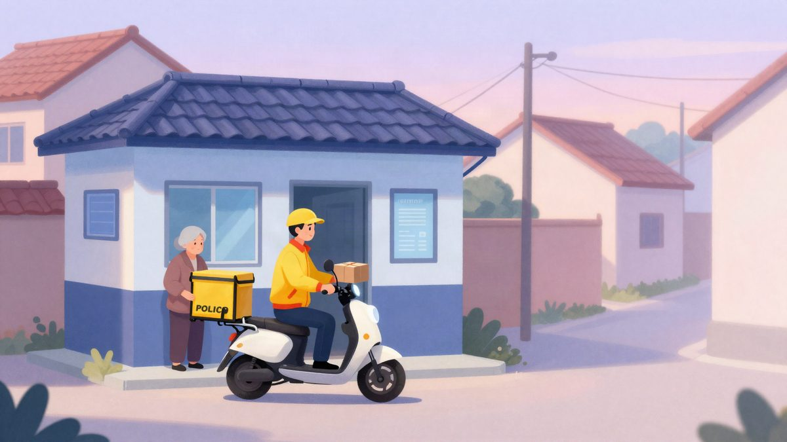

Kurir JD.com u Hangzhouu spriječio prijevaru: umirovljenica trebala platiti oko 2.600 eura za "čudotvorni lijek"

Kurir JD.com-a u Hangzhouu nije predao paket s "lijekom za mozak" koji je 85-godišnja starica trebala platiti pouzećem, oko 2.600 eura. Odnio ga je policiji, koja je uz pomoć aplikacije za analizu slika potvrdila da je oglašavanje lažno, a žena je odbila paket. Nije poznato je li protiv prodavača pokrenut postupak.
Kurir JD.com-a u Hangzhouu, u kineskoj pokrajini Zhejiang, spriječio je prijevaru prema 85-godišnjoj osobi koja živi sama. Za paket s "čudotvornim lijekom" trebala je pri dostavi platiti 20.000 juana (oko 2.600 eura). Kurir paket nije predao, nego ga je odnio u kvartovski policijski ured. Za slučaj je 4. studenoga izvijestio kineski portal MyDrivers.
Prodavač je proizvod predstavljao kao njemački lijek za mozak. Prema oglasu, jedna tableta trebala je zaustaviti propadanje mozga, izliječiti bolesti i ozljede mozga, popraviti moždane stanice i stvoriti nove neurone. Takve tvrdnje nemaju osnove, a proizvod se prodavao po izrazito visokoj cijeni.
Što je kuriru bilo sumnjivo
Kurir kaže da se prvi put susreo s pouzećem u tako visokom iznosu, a prodavač ga je još i stalno požurivao da paket što prije dostavi. Zbog toga je zaključio da nešto nije u redu i otišao na policiju umjesto k primateljici.
Policajci su došli u dom starije osobe i pregledali brošuru proizvoda. Već su iz nje procijenili da je riječ o zamci za starije osobe koja se služi zdravstvenim proizvodima. Da bi stariju osobu uvjerili, fotografirali su brošuru u AI aplikaciji. Aplikacija je brzo dala analizu i potvrdila da je oglašavanje lažno.
Kako je završilo
Policajci su starijoj osobi strpljivo objasnili da takav lijek ne može imati navedene učinke. Rekli su i da je proizvodni trošak takvih proizvoda obično vrlo nizak, a prevaranti ih starijim ljudima prodaju po visokoj cijeni. Nakon razgovora starija osoba je shvatila da je vjerojatno riječ o prijevari i pristala je odbiti paket.
Tako je sačuvala 20.000 juana ušteđevine za starost. Zahvalila je policajcima i kuriru, a prema izvješću je rekla da je dobila "još jednu osobu koja me štiti".
Što je s prodavačem i je li protiv njega pokrenut postupak, nije rečeno.
Izvor: MyDrivers (快科技)